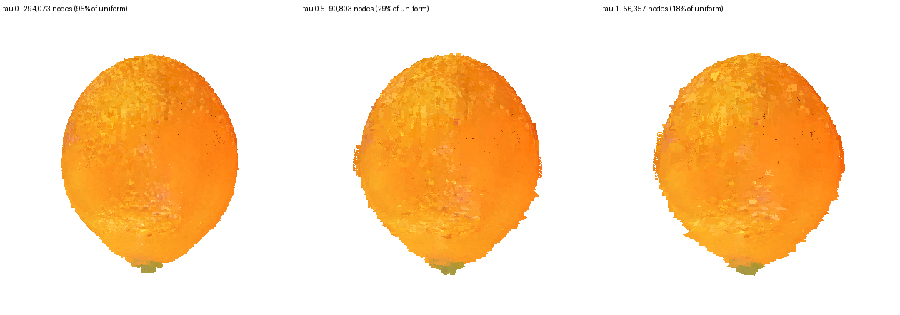

Cube Interior + O‑Voxel Cut Surface
The hidden volume stops being a rendering primitive
Implementation study · rebuilt on the verified pipeline
What the representation is
An object that can be cut open has to answer two different questions, and a Gaussian is asked to answer both. Where is the material — occupancy, connectivity, which piece a point belongs to, what collides with what. And what does the surface look like — the peel, and the face a cut has just exposed. A rendering primitive is good at the second and pays for the first with a trade it cannot escape: let \(\rho = \sigma/h\) be the support scale over the sample spacing, and small \(\rho\) leaves holes in the volume while large \(\rho\) blends across the material boundaries the interior is made of.
So the two jobs get two representations. A coarse cube grid holds the hidden volume, where a cell's support is exactly its own cell and therefore tiles. A dual-grid surface holds everything visible. The interior never renders as primitives, and the surface never has to fill a volume.
Making the occupancy a solid
The lattice is not solid and never was, and this is the precondition everything else rests on. The paper's fill places one particle per empty cell and skips cells that already hold a primitive, so the volume is a sponge; Gaussians hid it because their support overlaps, and a cube's does not. Closing the pinholes and filling what the closed shell encloses is idempotent — running it twice changes nothing — and the number that says how much it mattered is the connected-component count of the uncut object.
| object | coarse cells | pieces before | pieces after |
|---|---|---|---|
| doughnut | 462,131 → 533,236 | 44 | 1 |
| orange | 551,848 → 850,822 | 1,561 | 1 |
| watermelon | 310,741 → 560,275 | 2,641 | 1 |
Those are holes, not fragments. A piece count means nothing until this has run, so the cutting code runs it rather than assuming it.
Cutting: discrete topology, analytic boundary
A cut arrives as a plane. The cells it crosses are subdivided until \(h_\ell \le h_{\text{target}}\), the leaves are joined to their face neighbours, the edges the plane separates are dropped, and connected components on what is left are the pieces. No geometry is involved: the polygons come afterwards, and keeping the two apart is the design.
The crossing test is one absolute value rather than eight corners. A cube's extreme values on a plane sit at two opposite corners and which two depends only on the signs of \(\mathbf{n}\), so
is exactly the eight-corner test. Adjacency is arithmetic too: a leaf's neighbour is at its own level or coarser — were it finer, the finer leaves on the shared face would find this one — so the coarser candidate is the neighbour's coordinate shifted right, which is floor division and therefore the cell containing it. The first version enumerated the layer of finest cells outside each face and looked each up in a dictionary: correct, and 96 probes per coarse leaf once two levels exist, tens of millions on a real lattice. Six vectorised passes per level instead, and the self-test went from minutes to 2.2 seconds.
| object | band leaves | total leaves | pieces after one cut |
|---|---|---|---|
| doughnut | 21,760 (3.9%) | 552,276 | 2 — 265,853 / 286,423 |
| orange | 86,776 (9.4%) | 926,751 | 2 — 464,339 / 462,412 |
| watermelon | 66,408 (10.7%) | 618,382 | 2 — 278,479 / 339,903 |
The band is \(O(N^{2/3})\) of the volume, which is what it should be. On synthetic shapes the piece counts are the known ones — a ball cut through its centre is two, a plane clear of it is one, a torus is two whether the plane contains its axis or crosses it, a dumbbell cut through its neck is two. The case that justifies subdividing at all is a cap thinner than a coarse cell: every coarse centre stays on one side, so the coarse labelling reports one piece — the object, uncut — and refined to \(h_{\text{target}}\) it reports two.
The face is exact even though the topology is not
Topology is voxel-approximate by construction and the visible face must not be, or it reads as a staircase. Per cut leaf, intersect the plane with the twelve edges, order the points around their centroid in the plane's own basis, and fan them: a convex polygon of three to six vertices lying exactly on the plane. The worst deviation from the plane over a whole object is 0.00e+00.
| shape | cut area, mesh | closed form | error |
|---|---|---|---|
| ball through its centre | 448.0 | \(\pi r^2\) = 452.4 | 1.0% |
| torus across its axis | 868.0 | \(4\pi R r\) = 879.6 | 1.3% |
That 1% is the voxelisation of the silhouette, not the polygons. The mesh conforms without being made to: every crossed cell is refined to the same depth, so all cut cells are at one level and the polygons meet edge to edge, which is asserted rather than assumed.
The surface, all of it, as O-Voxel
Converting only the cut face and leaving the photographed outside as Gaussians is what makes two renderers, a depth convention and a compositing step necessary. Converting the exterior as well removes the seam instead of managing it. The occupancy already holds the volume, so the exterior is its boundary — every face of an occupied cell whose neighbour is empty — and the same dual-grid encoder that handles the cut face takes the staircase off it.

| object | active voxels | dual vertex to the model, mean | 95th | extent error |
|---|---|---|---|---|
| doughnut | 850,790 | 0.95 \(h\) | 1.70 \(h\) | 0.00% |
| orange | 442,253 | 1.07 \(h\) | 2.22 \(h\) | 2.32% |
The boundary is blocky at the cell size, which is the honest shape of a cube representation, and the dual grid's quadric fit is what turns the staircase back into a surface. How well is the distance column, measured against the primitives of the model it came from rather than asserted. The orange's 2.32% is the boundary running along cell corners and therefore sitting half a cell proud.
Paying for curvature instead of resolution
A dual grid stores one node per active surface voxel, so it costs \(O(A/h^2)\): a plane costs as much as a crumpled sheet of the same extent. That is the wrong thing to pay for, and it is fixable inside the algorithm rather than by preprocessing the input, because the dual vertex is already the minimiser of a quadric. For supporting planes \(\{(\mathbf{n}_i, d_i)\}\),
so a quadric is ten numbers, and — the property everything rests on — it is additive over the set of planes. The quadric of a merged block is exactly the sum of its children's, with no reference to the mesh they came from:
So the grid collapses bottom-up. Merge a \(2\times2\times2\) block, add the quadrics, solve \(A\mathbf{x} = \mathbf{b}\), and read the residual \(r = c - \mathbf{b}^\top\mathbf{x}\), which is the sum of squared distances from that one vertex to every plane the block covers. Flat regions coarsen, curvature does not, and only the geometry decides. \(A\) is rank-deficient wherever the block is locally planar, so the vertex is taken as the minimum-norm solution relative to the block's centre, which is what keeps it inside its own cell.
The tolerance is a length rather than a residual:
A raw residual grows with how many planes fall in a block, so the same number coarsens a dense region and refuses a sparse one for no geometric reason. The root-mean-square distance means the same thing at every resolution and on every object: \(\tau = 0.5\) is "within half a cell of the planes it replaces, on average".
| \(\tau\) | nodes | of uniform | mean error | 95th | max |
|---|---|---|---|---|---|
| 0.00 | 294,111 | 95.2% | 0.312 \(h\) | 0.787 | 1.193 |
| 0.10 | 141,995 | 46.0% | 0.339 | 0.787 | 1.120 |
| 0.35 | 106,649 | 34.5% | 0.347 | 0.787 | 1.754 |
| 0.50 | 90,803 | 29.4% | 0.356 | 0.787 | 1.715 |
| 1.00 | 56,357 | 18.2% | 0.446 | 0.841 | 1.548 |
The orange's exterior, against the uniform grid it replaces. The doughnut's 530,958 nodes fall to 197,025 at \(\tau = 0.5\) and 143,258 at \(\tau = 1.0\). The error stays under one cell throughout: 3.4× fewer nodes costs 0.04 of a cell in the mean. The uniform grid is \(\tau = 0\) on this curve rather than a different method.

Separately and orthogonally, the node encoding. A dual vertex lies inside its own cell by construction, so storing it as a quantised fraction has error at most \(\tfrac{\sqrt3}{2}h\,2^{-b}\), which at \(b = 8\) is \(h/512\); the index delta-codes along the space-filling curve the library already ships. That is coding rather than a contribution, and it is available to any representation including the Gaussians being compared against, so it is reported apart from the collapse.
Compositing, while the exterior is still Gaussian
Before the exterior was converted there were two renderers and a per-pixel choice between them, \(C(u) = C_G(u)\) if \(D_G(u) < D_O(u)\) and \(C_O(u)\) otherwise. The cut surface is planar by construction, so its rasterisation is a ray-plane intersection in closed form and a pixel is covered exactly when the hit lies in a cut leaf: the union of the polygons, cell for cell. The rays are checked against the projection they were built from — a hit point put back through the camera lands on its own pixel to within 0.007 px.
The depth convention had to be measured, and the obvious measurement cannot decide it. The renderer returns an alpha-weighted depth along the ray rather than the nearest surface, so both candidates sit 0.08 to 0.10 behind a minimum over primitive centres and their means are too close to call. What separates them is where the error lives: Euclidean distance and view-space \(z\) differ by \(1/\cos\) of the angle off the axis, so the wrong one leaves an error that grows towards the corners. By radial slope it is view \(z\): −0.058 against +0.060.

Physics keeps what the lattice had
The O-Voxel patch is the visible boundary and takes no part in the physics; the cube hierarchy is the physical volume and answers every question about where material is. So replacing the interior Gaussians costs nothing the occupancy-based collision was already giving.
Piece identity is a relabelling and not a resampling: the existing particle set stays as it is and each particle takes the piece of the leaf it falls in. Subdividing the cut band multiplies leaves, not particles — 797,838, 877,495 and 1,741,169 particles labelled with none left over. Collision stays a floor division and an occupancy test, with one more of each when the coarse cell was refined; no point-in-polyhedron query appears anywhere.
The narrow phase at the cut face is one comparison and it is not decoration. A leaf the cut passes through is occupied as a whole, so the voxel test claims material up to half a leaf past where the cut is: two freshly separated halves report 772 penetrating particles on the orange and 1,509 on the watermelon, and requiring the point to be on the piece's own side of the plane leaves zero. Pulled apart, nothing penetrates at any distance; pushed together, penetration appears at the first quarter cell and grows monotonically; a body rotated 35° as well as translated is still tested correctly, because each body carries its own rigid transform and every query is asked in the frame of the body being tested.
What this does not claim
- The exterior costs more, before the collapse. 442,253 dual-grid voxels replace 118,142 skin Gaussians on the orange and 850,790 replace 280,672 on the doughnut. The collapse takes the first of those to 90,803 at \(\tau = 0.5\), and the quantisation is available to both representations, so the comparison that matters is not yet run.
- The surface is faceted, and a perceptual score will say so. A dual-grid skin is one small planar patch per node, and CLIP or LPIPS against a photograph is exactly the kind of measurement that punishes that even where the geometry is right. No perceptual number is quoted here for that reason, and quoting one would need the faceting addressed rather than the metric chosen.
- The collapse is measured geometrically, not perceptually. The error column is the distance from a node's vertex to the model it came from. What that does to appearance at a given screen resolution is a separate question and is not answered here.
- Section 11 of the specification is not done. The four-representation baseline and its metric families — interior appearance, resolution stability, memory, runtime — wait until the architecture is finished. Topology and collision are the two that are already measured, above.
- Local subdivision does not invent interior texture. A child feature is its parent's, so a finer cut boundary is finer geometry and the same appearance.
References
- F. Wu and Y. Chen. FruitNinja: 3D Object Interior Texture Generation with Gaussian Splatting. arXiv:2411.12089, 2024.
- J. Xiang et al. Native and Compact Structured Latents for 3D Generation. CVPR 2026. TRELLIS.2.
- T. Ju, F. Losasso, S. Schaefer and J. Warren. Dual Contouring of Hermite Data. SIGGRAPH 2002.
- T. Xie et al. PhysGaussian: Physics-Integrated 3D Gaussians for Generative Dynamics. arXiv:2311.12198, CVPR 2024.